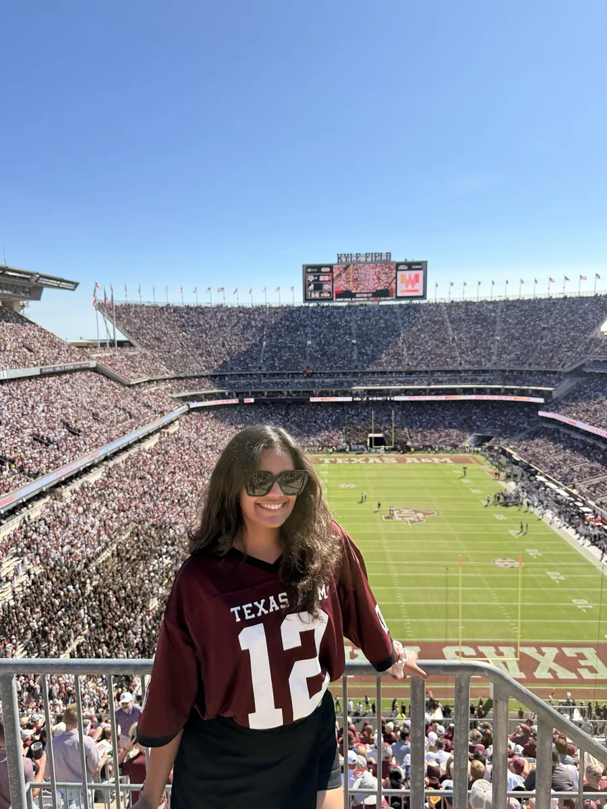

Designed a claim-level validation loop around LLM generation and conditional fallback retrieval.
81 → 89% factual accuracySEEKING FULL-TIME ROLES · OPEN TO RELOCATION
SOFTWARE ENGINEERING · AI SYSTEMS · DATA
Rhea
Sudheer.
From kernel interrupts to grounded LLM systems.
I build and maintain production software at Texas A&M’s Public Policy Research Institute, turning evolving research needs into reliable backend services and data workflows. Across AI, computer vision, and systems programming, I bring that same focus on correctness, thoughtful design, and measurable results.
89%factual accuracy
Hybrid Self-RAG
Hybrid Self-RAG
254Texas counties
platform scope
platform scope
97.7%reported accuracy
multi-omics ML
multi-omics ML
3×scholarship recipient
PES University
PES University
RÉSUMÉS / BY FOCUS
Find the right fit.
Explore my experience through the lens of your team.
00 / HIGHLIGHTS
Technical depth. Practical impact.
My work connects production engineering with research: building the platform, understanding the data, evaluating the model, and tracing failures through the system.
Build and maintain a statewide research platform, owning features across backend services, data validation, review workflows, and reporting.
254 counties · 100K+ recordsImplemented demand paging, scheduling, synchronization, a filesystem, and interrupt-driven disk I/O.
Custom x86 operating systemPublished work spanning healthcare digital twins, robust audio-visual speech recognition, and leukemia classification.
3 peer-reviewed publicationsBuilt end-to-end ML workflows from preprocessing and model selection to inference, evaluation, and explainability.
97.7% multi-omics resultProfiled real-time pedestrian detection beyond accuracy, considering latency, model size, failure modes, SHAP, and LIME.
Thales AI internshipAcross the stack.
This is the through-line across my projects: ingest information, reason over it, build the systems around it, and measure whether it actually works.
DATA → SOFTWARE → INTELLIGENCE → SYSTEMSDepth matters. So does being able to connect the layers.
Selected engineering work.
Production platforms, evidence-driven AI, and low-level systems. The architecture, decisions, and results behind the work.
CASE 01 · FLAGSHIPHybrid Self-RAG
Hybrid Self-RAG
with External Knowledge Validation
Core problem. Self-reflection can improve a response without proving its claims are supported by evidence.
My approach. Turn hallucination mitigation into a staged verification problem instead of a single generation call.
01User query
→
02Self-RAG Llama 2 / vLLM
→
03Sentence-level claims
→
04Keyword extraction
→
05Wikipedia + ArXiv + Wikidata
→
06Semantic evidence scores
→
07Per-source evaluation logs
DESIGN
Claim-level verification
Split responses into sentence-level claims with spaCy, retrieved external evidence, and compared claim/evidence embeddings with Sentence-Transformers cosine similarity.
EVALUATION
Inspect support by source
Log generated responses and separate evidence scores for ArXiv, Wikipedia, and Wikidata. A scoring script summarizes support and factuality metrics across the evaluation set.
RESILIENCE
Multi-source grounding
Independent validators query Wikipedia, ArXiv, and Wikidata, making each source’s evidence score visible instead of collapsing validation into a single opaque result.
+8 ptsfactual accuracy
81% → 89%
81% → 89%
−8 ptshallucination rate
19% → 11%
19% → 11%
+0.22average FactScore
0.65 → 0.87
0.65 → 0.87
CASE 02 · PRODUCTION SOFTWARE
Statewide Public-Policy Workflow & Reporting Platform
I develop and maintain a live production platform at Texas A&M’s Public Policy Research Institute, supporting statewide workflows across 254 Texas counties and 100K+ public records.
My work spans backend services, relational schemas, permissions, data ingestion, and reporting. I take features from evolving stakeholder requirements through implementation, testing, debugging, and release, while preserving existing workflows and data integrity.
01County user
→02Metadata form engine
→03Validation
→04MySQL / relational model
→05Review workflow
→06Reports & analytics
ARCHITECTURE
Metadata over one-off forms
Form definitions, questions, options, and conditional rules are separated from submissions so the same engine can support evolving business workflows.
DATA QUALITY
Validate before reporting
Automated checks catch malformed, incomplete, duplicate, or inconsistent records before they propagate into analytical outputs.
BACKEND
Reusable data operations
API-backed ingestion, SQL transformations, relational schemas, and reporting logic reduce repetitive preparation and improve consistency.
AGILE DELIVERY
Iterate, review & release
I follow Agile methodologies to deliver production changes iteratively, adapting implementation to stakeholder feedback and evolving requirements. GitHub version control, code review, testing, and CI checks support each release.
AI-ASSISTED DEVELOPMENT
I integrate Claude Code into my day-to-day PPRI engineering workflow, alongside GitHub and the existing codebase. I own the resulting implementation, review, and validation against application requirements and production behavior.
254Texas counties
statewide scope
statewide scope
100K+public records
collection → reporting
collection → reporting
CASE 03 · SYSTEMS
Custom x86 Operating System
Implemented core kernel subsystems and debugged behavior at the hardware/software boundary — memory, scheduling, synchronization, file I/O, and interrupts.
USER / THREADS
↓ syscalls / faults
PREEMPTIVE
SCHEDULER
SCHEDULER
VIRTUAL
MEMORY
MEMORY
SPINLOCKS
+ MUTEXES
+ MUTEXES
INODE FILE
SYSTEM
SYSTEM
BUFFERED I/O
QUEUES
QUEUES
TIMER + DISK
INTERRUPTS
INTERRUPTS
x86 HARDWARE / EMULATION
MEMORY
Demand paging
Page-fault handling, physical-frame allocation, page-table updates, and TLB-aware mapping consistency.
CONCURRENCY
Preemption safely
Timer-driven scheduling, ready queues, thread lifecycle handling, and synchronization around shared scheduler/memory/I/O state.
I/O
Don’t busy-wait
Request queues and interrupt-based disk completion connect filesystem operations to non-blocking device access.
Backend & applications
Services, product workflows, and the databases behind them.
E-commerce Microservices
Separated user, product, and cart/order responsibilities into independent services, with a React frontend and repeatable container-based deployment.
How it works — E-commerce Microservices
Service delivery
- BoundariesUser, product & order services
Separate application responsibilities into three services behind a React storefront.
- PackagingDocker images
Package each service with its own Dockerfile for container-based deployment.
- DeploymentKubernetes manifests
Declare service deployments in YAML; the Jenkins pipeline builds images and applies the manifests.
Engineering focus
Service boundaries separate business responsibilities; container images carry each service into deployment.
Ledgerly — Finance App
A team-built finance application with session-authenticated expense APIs, parameterized PostgreSQL queries, and receipt routes. Packaged with Docker Compose for local setup.
How it works — Ledgerly — Finance App
Request & data flow
- ClientNext.js + React
Provide the finance interface, with server-side API routes handling expense operations.
- API boundarySession checks + validation
Require a NextAuth session and validate numeric prices before inserting an expense.
- PersistenceParameterized PostgreSQL queries
Scope expense reads to the session user and release pooled connections after each operation.
Engineering focus
Expense ownership comes from the server session; SQL values are passed as query parameters.
Music Player DBMS
Modeled users, subscriptions, artists, songs, albums, and podcasts in a relational database. Added validation triggers and queries for listening patterns and catalog insights.
How it works — Music Player DBMS
Schema & query design
- Domain modelEntities + relationships
Represent users, subscriptions, artists, songs, albums, and podcasts with explicit relational links.
- NormalizationBCNF schema
Structure tables around functional dependencies to reduce redundant data and update anomalies.
- IntegrityKeys + validation triggers
Enforce relationships with foreign keys and reject expired subscriptions with database triggers.
- AnalysisJoins + aggregations
Query listening counts, catalog composition, and artist statistics using joins and nested queries.
Engineering focus
Business rules live alongside the data, so integrity checks apply at the database boundary.
AI, vision & language
Retrieval, perception, and learning across modalities.
Report Genie
A Flask application combining Gemini-based medical PDF extraction, hybrid retrieval for test descriptions, and a local language model for report Q&A.
How it works — Report Genie
Retrieval & generation
- IngestionPDF text extraction
Accept medical report uploads through Flask and extract document text with PyMuPDF.
- StructuringTest names + values
Use Gemini to extract report measurements into structured fields for the summary.
- RetrievalBM25 / TF-IDF + FAISS
Use BM25 for test descriptions and TF-IDF for Q&A retrieval, each paired with FAISS embedding search.
- GenerationLocal model Q&A
Pass the question and retrieved context to a llama.cpp model, with context trimming for its configured token window.
Engineering focus
Separate extraction, retrieval, and generation so each stage has a distinct responsibility.
Robust Deepfake Detection
Studied detection under distribution shift using a Vision Transformer with frequency features, invariant learning, and meta-learning. Compared performance across known and unseen datasets.
How it works — Robust Deepfake Detection
Research & evaluation
- RepresentationViT + frequency features
Combine image representations with FFT features to study visual and frequency-domain manipulation cues.
- Training objectiveInvariant risk minimization
Study representations that remain useful as the training data distribution changes.
- AdaptationMAML meta-learning
Explore model adaptation as a strategy for generalizing across manipulation settings.
- EvaluationKnown vs. unseen datasets
Compare detection performance across datasets to expose sensitivity to distribution shift.
Engineering focus
Cross-dataset evaluation tests whether learned signals transfer beyond the training distribution.
Audio-Visual Speech Recognition
Synchronized audio/video preprocessing, augmentation and denoising feeding Transformer sequence modeling with CTC loss for alignment-free transcription.
How it works — Audio-Visual Speech Recognition
Sequence modeling
- InputsAudio + video streams
Use acoustic signals and visual speech information as complementary inputs for recognition.
- PreprocessingSynchronization + denoising
Align the streams and apply augmentation and denoising before sequence modeling.
- ModelTransformer sequence features
Model temporal context across the prepared audio-visual sequence.
- TrainingCTC objective
Learn transcription without requiring a frame-level alignment between input and target text.
- EvaluationRecognition error analysis
Compare recognition errors to assess the effect of the modeling and preprocessing choices.
Engineering focus
Synchronizing the modalities and handling variable-length alignment are separate modeling challenges.
Vision for the Blind
Camera-based hazard detection using YOLOv3 and OpenCV, with non-maximum suppression, geometric distance estimates, and spoken object alerts.
How it works — Vision for the Blind
Perception & feedback
- InputCamera frames
Process a stream of visual observations for assistive scene perception.
- DetectionYOLOv3 objects + obstacles
Identify objects and obstacles that can inform the user’s understanding of the scene.
- Hazard logicDistance + proximity thresholds
Estimate distance from bounding-box width and compare it with class-specific proximity thresholds.
- InterfaceSpoken feedback
Translate perception outputs into concise audio prompts for the user.
Engineering focus
The output interface translates model predictions into feedback a user can act on.
Data science & healthcare
From heterogeneous data to models and measurable analysis.
Nutrition Intake Estimation
Combined meal images, glucose time-series signals, and demographic/microbiome features through separate encoders and learned fusion to estimate caloric intake.
How it works — Nutrition Intake Estimation
Multimodal regression
- InputsImages, CGM & participant data
Normalize meal images, prepare glucose sequences, and encode demographic and microbiome features.
- RepresentationSeparate encoders → fusion
Encode images with a CNN; concatenate image, glucose, and structured-data representations.
- PredictionCalorie regression
Pass the fused feature vector through fully connected layers to estimate caloric intake.
Engineering focus
Modality-specific encoders preserve each input structure before the representations are combined.
Prediction + Forecasting + Causal Analysis
SQL/Python pipeline over 500K+ hospital and insurance records to answer three different operational questions: risk, demand, and intervention impact.
How it works — Prediction + Forecasting + Causal Analysis
Analytics workflow
- Source data500K+ healthcare records
Work across hospital and insurance records using SQL and Python.
- PreparationSQL feature pipeline
Transform records into analysis-ready features for the operational questions being studied.
- Analysis tracksRisk · demand · intervention
Apply prediction, time-series forecasting, and causal analysis to distinct analytical questions.
Engineering focus
Risk prediction, demand forecasting, and intervention analysis each require a different analytical approach.
Early-Stage Diabetes Detection
A multi-omics classification notebook using 15 selected features, MinMax scaling, and a Keras dense neural network to distinguish four diabetes-related classes.
How it works — Early-Stage Diabetes Detection
ML experiment workflow
- InputsThree omics datasets
Combine selected metabolomic, proteomic, and lipidomic measurements into a 15-feature input.
- PreparationLabel encoding + scaling
Encode class labels and apply MinMax scaling to the selected biological measurements.
- ModelKeras dense network
Train a feed-forward classifier with ReLU hidden layers and a four-class softmax output.
- EvaluationHeld-out classification analysis
Inspect learning curves, a classification report, and a confusion matrix for the held-out split.
- OutputFour-class prediction
Return Control, Crossover, Diabetic, or Prediabetic from the model’s output probabilities.
Engineering focus
The notebook makes feature preparation, neural-network training, and classification analysis inspectable.
Professional experience.
Engineering, applied AI, enterprise systems, and research-oriented problem solving.
Texas A&M University
Public Policy Research Institute (PPRI)
CURRENT · FULL-TIME
Software Applications Developer I
Sep 2026 — Present
PREVIOUSLY
Student Research Assistant
2025 — Sep 2026
I build and maintain the production software behind statewide public-policy research workflows, supporting 100K+ public records across 254 Texas counties. My work connects research requirements with the backend services, data models, and interfaces people rely on.
- Agile delivery & feature ownership. Follow Agile methodologies to turn evolving requirements into iterative releases, incorporating feedback across schema design, backend implementation, permissions, and testing.
- Production reliability. Build reusable ingestion and validation workflows; investigate application and data failures through logs, SQL, and regression checks.
- Engineering workflow. Work extensively in GitHub for version control and code review, with Claude Code integrated into development and implementation validation.
Technology Consulting
Intern · Enterprise Systems / ControlsEvaluated IT General Controls across Oracle and SAP environments, including access management, change management, backup/recovery, data integrity, and operational reliability; traced evidence, investigated exceptions, and translated findings into remediation actions.
Oracle · SAP · ITGC · access controls · audit trails · change managementTech Mentee
Machine Learning · Multi-omicsBuilt a reproducible Type-I diabetes prediction pipeline across heterogeneous biological features, including preprocessing, exploratory analysis, feature engineering, controlled model comparison, cross-validation, evaluation, and interpretability-oriented analysis.
Python · Scikit-learn · NumPy · SciPy · ensemble learningRelated multi-omics code on GitHub ↗Artificial Intelligence
Intern · Real-time Computer VisionDeveloped a deployment-oriented pedestrian-detection pipeline using MobileNetV2 + SSD, profiling latency against detection quality and using SHAP, LIME, and saliency mapping to understand model behavior and failure cases.
Python · MobileNetV2 · SSD · SHAP · LIME · saliencyPublished research.
Peer-reviewed work across healthcare systems, multimodal learning, and medical computer vision.
P.01
IEEE ACCESS · 2024
Revolutionizing Healthcare: A Review Unveiling the Transformative Power of Digital Twins
A review of digital-twin systems in healthcare: how live and historical data, simulation, IoT, AI/ML, and virtual representations can support monitoring, prediction, and individualized care — while exposing practical challenges around data, interoperability, privacy, and deployment.
Clinical + sensor data→Digital representation→Model / simulation→Prediction & decision support
P.02
AMATHE · IEEE CONFERENCE · 2024
Enhancing Robustness in Audio Visual Speech Recognition: A Preprocessing Approach with Transformer and CTC Loss
Studied robustness in multimodal speech recognition by improving synchronized audio/video preprocessing, augmentation, and denoising before Transformer-based sequence modeling and CTC decoding, with systematic analysis under noisy conditions.
Audio + video→Sync / preprocess→Transformer→CTC→Error analysis
P.03
RAICS · IEEE CONFERENCE · 2024
Leukaemia: A Comparative Analysis of Deep Learning Models Using ALL Dataset
A comparative deep-learning study for Acute Lymphoblastic Leukemia image analysis, focused on preprocessing medical imagery, training candidate deep models, and comparing their classification behavior rather than treating one architecture as automatically optimal.
ALL imagery→Preprocess→Deep models→Comparative evaluation→Classification
Built in two chapters.
A computer-science foundation at PES University, followed by graduate depth across AI, information retrieval, systems, and data at Texas A&M.
2020 — 2024 · BANGALORE, INDIA
PES University
B.Tech Computer Science · GPA 9.1/10
Built the base: algorithms, ML, computer vision, research, and early industry exposure. Three-time recipient of the MR Doreswamy Scholarship.
FOUNDATION → RESEARCH → APPLIED MLDEEPER SYSTEMS + AI

2024 — 2026 · COLLEGE STATION, TEXAS
Texas A&M University
Master of Computer Science · GPA 3.83/4.00
Graduate work across Generative AI, ML, NLP, information storage and retrieval, data mining, operating systems, algorithms, and computer/network security — while building production-oriented research software.
RETRIEVAL → SYSTEMS → DATA → ENGINEERINGTools behind the work.
The technologies below are grouped by how I have actually used them.
Python · C · C++ · Java · SQL · R · PHP · JavaScript · Bash
Modeling, systems programming, backend services, data processing, analysis, and automation.
PyTorch · TensorFlow · Hugging Face · LangChain · FAISS · BM25 · Sentence-Transformers
RAG, embeddings, semantic search, model training, multimodal learning, and factuality evaluation.
Laravel · REST APIs · MySQL · ETL · Spark · Kafka · MongoDB
Data ingestion, relational design, reporting workflows, validation, backend application logic, and distributed-data tooling.
Linux · multithreading · virtual memory · scheduling · synchronization · filesystems
Low-level reasoning about concurrency, memory, interrupts, queues, and device I/O.
OpenCV · YOLO · MobileNetV2 · SSD · LSTM · CTC · SHAP · LIME
Real-time perception, multimodal speech recognition, temporal modeling, explainability, and failure analysis.
Git · GitHub · Claude Code · Docker · Kubernetes · Jenkins · CI/CD · AWS · GCP
Agile delivery at PPRI, with GitHub-based development, code review, and Claude Code integrated into implementation, testing, production debugging, and release support.
07 / CONTACT
Let’s build something that matters.
I’m looking for full-time opportunities in software engineering, backend engineering, and AI / ML systems where I can own features, solve meaningful technical problems, and contribute to a strong engineering team.
Currently based in College Station, Texas, and open to relocation. If my experience fits your team, I’d love to connect.